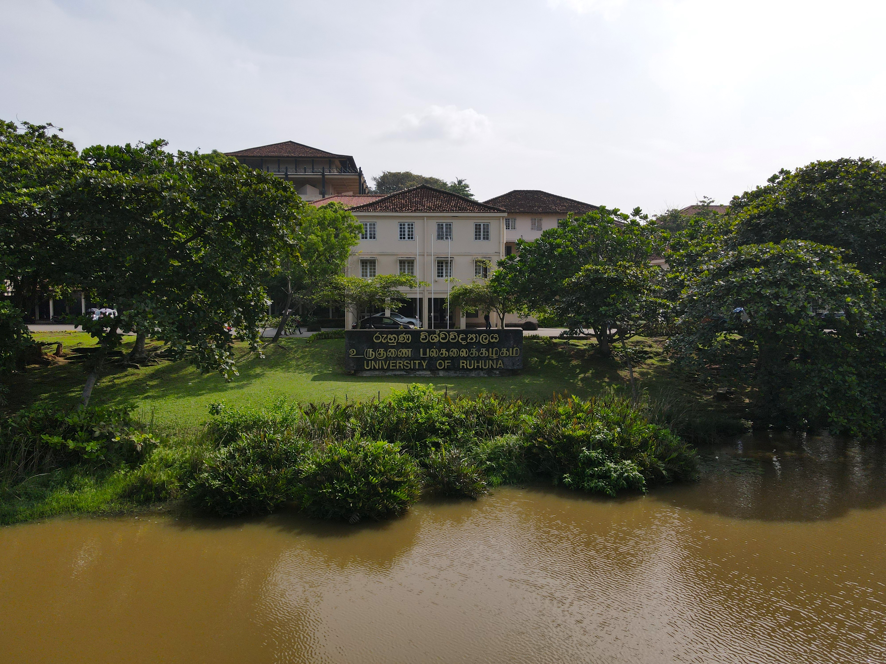

Ruhuna University News Portal
Stay Informed,Stay Ahead
Latest
Student portalYour account
LibraryBooks and journals
Exam resultsCheck your marks
TimetablesLectures and exams
Latest newsFresh from
Fresh from
campus
Notice board
Announcements
FacultiesMany fields,
Many fields,
one university
- 01
Agriculture
Crops, animal science, food and sustainable farming.
- 02
Engineering
Civil, electrical, mechanical and more, built at Hapugala.
- 03
Fisheries & Marine Sciences
Ocean and coastal research on the southern shore.
- 04
Humanities & Social Sciences
Languages, society, culture and public policy.
- 05
Medicine
Advancing healthcare, clinical studies, and medical sciences.
- 06
Science
Exploring mathematics, physics, chemistry, and modern laboratory research.
By the numbersA university
A university
that grows
1978Year established
10K+Undergraduates
72Acres, main campus
8+Faculties across the south

News
Research, campus life, academics and achievements from across the University of Ruhuna.